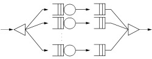
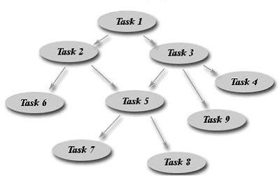

Edward Harned (eh)
Senior Developer, Cooperative Software Systems, Inc.
November, 2010
What is Fork-Join?
Think of a fork in the road where each path eventually comes back together — joins.
Fork-Join breaks an application into several parts for parallel processing and joins the results at the end.
Figure 1: Fork-Join Structure

Let’s say we have an array of one thousand numbers. We need to do a procedure on each of these numbers and add the total.
Listing 1: Array Processing
|
|
If the procedure takes one second (wall-clock time) to complete, then it is going to take one thousand seconds (over 16½ minutes) to complete this task.
Fork-Join could
- separate (fork) the large array into ten arrays of one hundred elements each,
- processes each array on a separate CPU, and
- join the results when finished.
That would take one hundred seconds (just over 1½ minutes), one tenth of the original time. The more CPU's available, the faster the result.
This abstraction closely resembles the standard scientific model of Divide-and-Conquer.
Divide-and-Conquer is a natural paradigm for parallel algorithms. After dividing a problem into two or more sub-problems, the method solves the sub-problems in parallel. Typically, the sub-problems are solved recursively and thus the next divide step yields even more sub-problems for solving in parallel.
Figure 2: Divide-and-Conquer

This is what high performance computing is all about — simultaneously processing humongous amounts of data on as many CPU’s as available. Map/Reduce, sorting, and countless array processing applications all can use Divide-and-Conquer to solve their problems.
Fork-Join in Java™
There are four commercial-grade Fork-Join frameworks available today:
- TymeacSE / ME / AND — These are the Embarrassingly-Parallel Fork-Join frameworks that split the work into components for independent execution on multiple threads.
- TymeacDSE — This is the Divide-and-Conquer Fork-Join framework (sometimes called "scatter-gather") that dynamically decomposes the work into identical tasks for execution on multiple threads.
The Conqueror is the subject of this article. | There is a Fork-Join collection from the JCP JSR-166 Expert Group.
This is a scholarly package.
The Conqueror Attributes
Ease of use
The server itself — has various options for execution in both an embedded mode as well as using RMI (standard/activatable, IIOP, etc.), logging, statistics gathering, error detection/recovery and many other aspects of a professional, commercial grade server. The professional documentation (80 page html style manual) makes the learning curve easier.The user class the server calls to do the work — is straightforward. You either do the procedure now or you fork new tasks.
The client that calls the server to run the user class — is straightforward and simple. You either wait for a response (synchronous request) or not wait (asynchronous request.)Independence
The server is completely separate from the calling client and the user class. The server is able to function as an embedded entity within any Class or as a Remote Object (RMI.)
The user class may reside locally to the server class path or be accessed by a URL Class Loader.
The calling client may reside anywhere, including within the user class (when using recursion.)
Code independence means simplicity of design, enhancement and debugging; no spaghetti code here.
Design structure / work-stealing vs. work-sharing
Work-Stealing Underutilized possessors take the initiative; they tend to steal work from other processors. Tasks are put into, and worker threads fetch Tasks from, the bottom of a deque (double ended queue.) When worker threads have no work in their own deque, they fetch Tasks from the top of another thread's deque. When a Tasks needs to sub-Task the work, it puts all the new Tasks into the same deque from which they came.
This design may limit cache misses and thread contention since stealing threads only fetch from the top of the deque. At least that's the way it's supposed to be. Work-Stealing works beautifully in operating systems and near operating systems (Cilk.) But the assumptions hold little weight in Java™.
Java™ applications run under a virtual machine. Sometimes under two virtual machines (mainframes run Linux under VM and Linux runs the JVM.) Therefore, Java™ applications can make no assumptions about any cache.
Since all new Tasks go into the same deque, work-stealing threads have a very high potential for conflict with each other when they fetch Tasks from the top of this deque. Picture 32 threads/deques and 8 client requests. All the tasks for the 8 requests go into 8 deques only. Now 8 threads fetch Tasks from their own deque while the other 24 threads have to fight each other for work.
Work-Stealing threads need to wake up periodically and go looking for work. There is a poor correlation between timing in Java™ and timing on the hardware. A n-nanosecond sleep in Java™ doesn't always translate accurately to the underlying system. Tasks may wait unprocessed until the thread finally runs.
Work-Sharing The scheduler tries to spread the work among possessors in hopes of distributing the work to underutilized processors The Conqueror uses Work-Sharing. Or more accurately, scatter-gather. The scheduler places each Task into the bottom of the first empty FIFO queue it finds; threads fetch from the top. When all queues have work, the scheduler balances the task placement evenly throughout the system. The Conqueror doesn't depend on threads periodically waking up to look for work, the scheduler physically wakes up each thread when adding a Task to it's queue. For the Conqueror, when the application spawns Tasks, it's all hands on deck — we're not paying you to rest — every thread helps to finish the work as quickly as possible.
When a queue becomes empty, the owner thread goes looking for work in other queues. Since the queues contain a balanced load, the potential for contention is light. Also, if a wondering thread's queue suddenly has work, the thread stops its snooping and immediately goes back to it's own queue.
Maximum efficiency. Maximum speed. Maximum throughput.
Scaling
For very large processor environments (hundreds/thousands CPU/cores), the Conqueror provides the ability to use indexes over the threads/queues to speed up scheduling and retrieving Tasks. This is the scalability feature critical to truly parallel applications.
User Class Restrictions
None.
Unlike some other software that strongly restricts access to outside resources (DBMS, Queuing systems, etc.) and cannot permit inter-task communication (volatile fields), the Conqueror has strong error and stall detection so any algorithm is a good algorithm.
Error detection/recovery, Stall detection/recovery
User Class exceptions restart threads, errors disable threads. The Conqueror prints/logs the exception in a detailed message and notifies an administrator of the problem. User Classes may be re-loaded during execution without bringing down the server. After a failure the Conqueror tries to back out any Tasks already scheduled. Since the request is a failure, stopping work in progress or before it starts, leaves threads free to pursue useful work.
The Conqueror times seven events in the life of a thread. This way the run-a-way or waiting-forever problem is detectable by a Monitor daemon. When an asynchronous request exceeds a prudent time limit, The Conqueror adds an entry to a "possibly stalled" list and notifies an administrator. The list is viewable and alterable by administrators. Truly lost threads (a User Class waiting on a resource that will never free) may be expunged and replaced by a fresh copy.
Statistics gathering / repository
The Conqueror keeps detailed usage statistics for threads, queues, stalled requests, and User Classes. The Conqueror provides writing to a repository both on request and at shut down.
Security
SSL security was built into the Conqueror from the beginning. There was no need to use the Native Interface and especially no need to use the Unsafe Class to bypasses all the managed runtime safety guarantees and security features. The Conqueror was built as a 100% pure application by application developers with other application developers in mind.
Tuning
100% pure also means 100% tunable. The application runs the same on every JVM. With no hooks into the VM (the Unsafe Class), there are no surprises when porting to other operating systems and VM providers. It works the same, only faster or slower.
The Conqueror provides seven statistics useful for analyzing thread performance, four statistics useful for analyzing queue performance, and four statistics useful for analyzing the performance of the optional indexes. (And naturally, a chapter in the user manual on tuning.)
Administration
It isn't much good if nobody knows what it's doing. And if you know what it's doing, you surely want to change it.
The Conqueror comes with fourteen GUI's (and non-GUI access) to view and alter the executing server and three GUI's for managing the setup and operational variables.
The Conqueror provides a dynamic response to an ever changing environment.
{kind=link}
Conclusion
Using a Fork-Join framework to develop compute-intensive applications is a no-brainer.
Happily, there is general-purpose, Fork-Join framework supporting the properties mentioned above for multi-core applications in Java™ SE available today.
Tymeac™ Divide-and-Conquer for the Java™ Standard Edition
is an Open Source Software project maintained on
and you can download the latest edition there.
References
Download the latest DSE edition of Tymeac here. The version described in this article.
Download the latest SE edition of Tymeac here. The embarrassingly-parallel Fork-Join product for the Java™ SE environment.
Download the latest ME edition of Tymeac here. The embarrassingly-parallel Fork-Join product for the Java™ ME environment.
Download the latest AND edition of Tymeac here. The embarrassingly-parallel Fork-Join product for the Android™ environment.
Other Fork-Join articles in this series:
Why the JCP JSR-166 Expert Group collection is a scholarly package.
An “embarrassingly parallel” Fork-Join model — Fork-Join Development in Java SE
Using Wait Lists for Efficiency — High Performance Priority Queues in Java SE
The Java™ SE Thread Container — Managing Threads in Java SE
The JSR-166 Interest Site — http://gee.cs.oswego.edu/dl/concurrency-interest/
The Cilk Site — http://supertech.csail.mit.edu/cilk/
About the Author
Edward Harned is a software developer with over thirty years industry experience. He first led projects as an employee in major industries and then worked as an independent consultant. Today, Ed is a senior developer at Cooperative Software Systems, Inc., where, for the last twelve years, he has used Java™ programming to bring multi-threading solutions to a wide range of tasks.